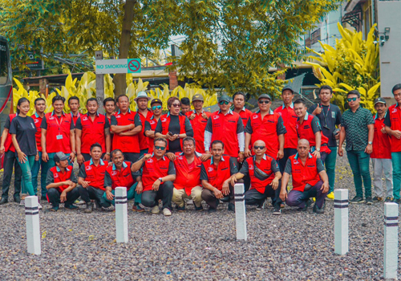

Tour Guide Bali, Jasa Pemandu Wisata Khusus Group
Selain menyediakan jasa layanan sewa bus di bali, kami juga telah bekerjasama dengan beberapa tour guide bali bagi yang ingin mengunakan jasa pramuwisata saat berwisata ke bali Untuk meningkatkan kualitas pariwisata di Bali, maka Pemerintah Provinsi Bali bersama DPRD Bali merancang perda pramuwisata atau tour guide agar pramuwisata sebagai ujung tombak pariwisata Bali dapat menjalankan peranannya dengan lebih optimal.
Tour Guide atau Pemandu Wisata menawarkan perusahaan dan informasi kepada individu atau kelompok wisatawan. Mereka berpengetahuan dan paham tentang tempat-tempat yang mereka tunjukkan kepada wisatawan. Pada tour yang mencakup tamasya bangunan bersejarah, situs, dan lokasi, Pemandu Wisata harus dapat memberikan semua informasi yang harus mereka ketahui tentang tempat yang mereka kunjungi kepada wisatawan.
Sebagian besar Pemandu Wisata bekerja pada rute yang telah ditentukan sebelumnya dan mengunjungi daftar lokasi yang dipilih. Mereka biasanya dipekerjakan oleh operator tur, hotel, resor, dan tempat lain seperti museum atau tempat bersejarah. Namun, beberapa Pemandu Wisata bekerja secara mandiri atau wiraswasta
Pemandu wisata diharapkan memberikan informasi kepada wisatawan mengenai tempat yang mereka kunjungi, menjawab pertanyaan yang mungkin mereka miliki, dan mengikuti rute yang telah dirancang sebelumnya agar tidak tersesat. Beberapa Pemandu Wisata bekerja dengan perusahaan wisata yang membawa wisatawan berkeliling kota dan menunjukkan kepada mereka landmark utama. Beberapa dari tur ini dilakukan dari bus, sementara yang lain berjalan kaki.
Peran dan Tanggung Jawab Pemandu Wisata atau Tour Guide
Merekomendasikan tempat wisata yang menarik kepada wisatawan.
Menemani, membimbing serta memberi informasi pada wisatawan yang tengah mengadakan kegiatan wisata.
Menjelaskan dan memberi pengetahuan tentang objek wisata yang sedang dikunjungi oleh wisatawan.
Menciptakan kesan baik atas daerah, negara, bangsa, dan kebudayaan pada wisatawan.
Melindungi dan memberi jaminan keselamatan pada wisatawan.
Keuntungan Menggunakan Tour Guide Bali Saat Berwisata
1.Seorang tour guide akan menyesuaikan tur dengan kebutuhan dan selera Anda.
Seorang pemandu dapat membuat rencana perjalanan Anda, mengatur akomodasi dan transportasi Anda, dan bahkan mungkin menghemat uang Anda. Pemandu wisata dapat menawarkan tip tentang di mana dan apa yang harus dimakan, apa yang harus dinikmati dan apa yang harus dihindari. Dia dapat menyesuaikan dan memberikan tur ramah keluarga ke keluarga dengan anak-anak atau tur penuh fakta ke sekelompok penggemar sejarah.
Pemandu yang berpengetahuan luas dapat menekankan fakta-fakta penting dari setiap kunjungan wisata, dan ini akan terbukti sangat berharga terutama bila Anda memiliki sedikit waktu di satu tempat. Ini adalah kejadian yang sangat umum ketika di kapal pesiar dengan waktu terbatas di setiap pelabuhan.
2. Tour guide bali dapat membawa Anda ke tempat-tempat yang tidak akan pernah Anda ketahui.
Bahkan jika Anda menghabiskan berjam-jam mencari di Internet atau membaca buku panduan, Anda tidak akan pernah benar-benar tahu tempat-tempat menarik yang kurang dikenal. Pemandu yang baik dapat memberi tahu Anda semua tempat terbaik yang sering dikunjungi oleh penduduk setempat dan bagaimana merasakan perjalanan Anda
3.Seorang tour guide akan menunjukkan hal-hal yang tidak akan pernah Anda perhatikan.
Seorang pemandu akan menjelaskan dan memahami apa yang Anda lihat. Dia akan membuat apa yang tampak seperti tumpukan batu menjadi hidup! Seorang pemandu akan menempatkan apa yang Anda lihat dalam konteks sejarah, agama dan budaya. Dia dapat menjawab pertanyaan tentang apa pun yang memicu rasa ingin tahu Anda. Dia akan memberi tahu Anda tentang kebiasaan dan moral masyarakat dan menjelaskan apa yang membuat daerah ini berbeda dari daerah Anda
4. Menggunakan panduan adalah penggunaan waktu Anda yang terbaik.
Kerepotan mendapatkan tiket, membuat reservasi, memeriksa jam operasional mudah bagi pemandu wisata yang baik. Pemandu wisata akan selalu mengetahui jam terbaik untuk mengunjungi atraksi, kapan harga terbaik, tempat mana yang dapat Anda lewati dan sejumlah trik dan taktik yang akan membantu Anda memaksimalkan perjalanan ke lokasi yang sering dikunjungi. Pemandu yang baik mungkin membawa Anda ke objek wisata di pagi hari sebelum keramaian tiba, atau mengatur tur pribadi di luar jam kerja. Anda akan dapat melakukan dan melihat lebih banyak saat mempekerjakan seorang ahli.
5.Panduan adalah sumber daya pribadi Anda
Dia dapat menjawab pertanyaan Anda dan dapat menyarankan hal-hal yang sesuai dengan minat Anda, baik sebelum maupun selama perjalanan Anda. Di tempat-tempat yang sangat kaya akan makna sejarah atau budaya, pemandu wisata yang terdidik dapat menawarkan kedalaman pengalaman dan pengetahuan yang tidak ada buku panduan, panduan audio, atau pembacaan plakat yang akan mendekatinya. Pemandu yang baik dapat menjelaskan cerita di balik monumen, candi atau patung dan selalu up-to-date dengan fakta-fakta.
6. Tour guide bali adalah teman yang baru
Saat menyewa jasa tour guide bali Anda akan selalu memiliki koneksi pribadi. Anda selalu dapat menghubungi pemandu Anda dan menanyakan informasi, merujuk teman Anda atau memesan perjalanan Anda berikutnya dengan mudah dan tanpa kerumitan, sambil menghemat banyak.
7. Keamanan
Tour guide bali memiliki pemahaman yang lebih baik tentang bagaimana sistem lokal beroperasi dan dapat membantu Anda dengan hal-hal di objek wisata yang dikunjungi yang tidak Anda kenal. Anda tidak perlu khawatir tersesat atau tidak sengaja bepergian ke tempat-tempat berbahaya dengan pemandu lokal di sisi Anda.
Meskipun tour guide bali berlisensi adalah layanan opsional saat berkunjung, ada baiknya waktu dan usaha Anda berinvestasi dalam satu. Panduan akan meningkatkan pengalaman Anda di bali dan akan menghemat banyak waktu, uang, dan kerumitan
Recent Post


Pintasan
© Your Site Name. All Rights Reserved. Designed by HTML Codex